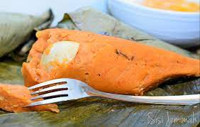

MOI MOI

Moi moi:Nigerian steamed pudding
Moin-Moin or Moimoi is a Nigerian steamed bean pudding made from a
mixture of washed and peeled black-eyed beans, onions and fresh ground
red peppers. It is a protein-rich food that is a staple in Nigeria.
INGREDIENTS
- Black-eyed Peas or Brown Beans
- Red Bell pepper/tatashe Medium size
- Habanero/Scotch Bonnet/Rodo
- 3/4 Cup Diced onion
- 2 Tablespoons Crayfish
- 1/4 Cup Vegetable Oil
- Chicken bouillon Cubes
- Fish- I like Mackerel or Salmon
- Hard-boiled Eggs
- Salt
STEPS
- Soak and peel the beans
- Blend with peppers and onions
- Season the batter
- Portion inside a heat safe container
- Steam